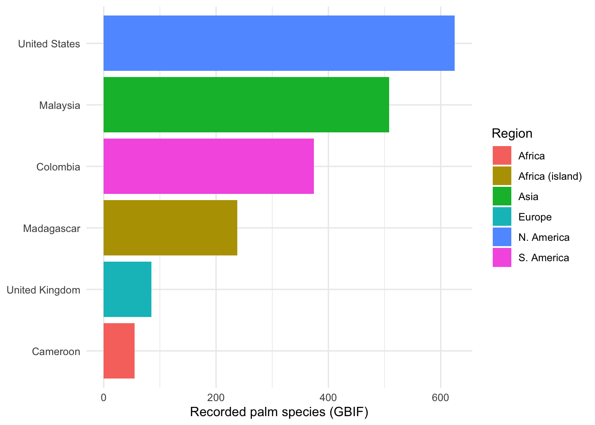
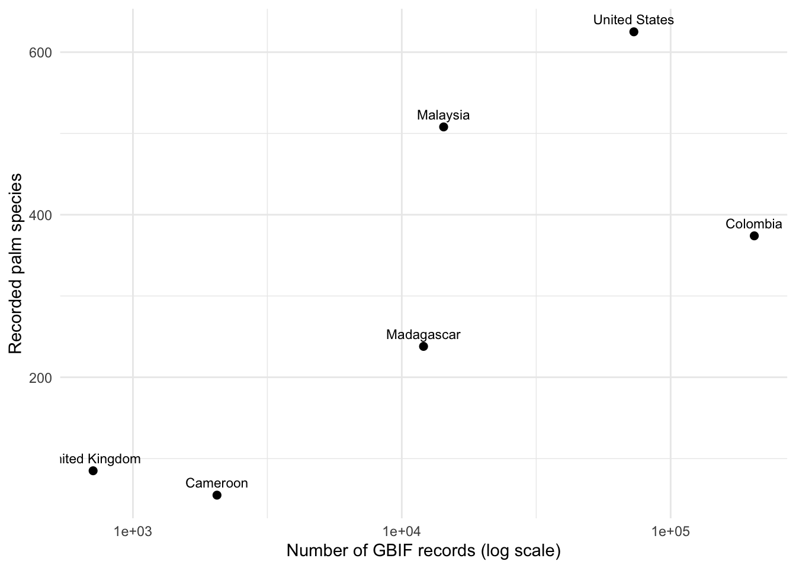
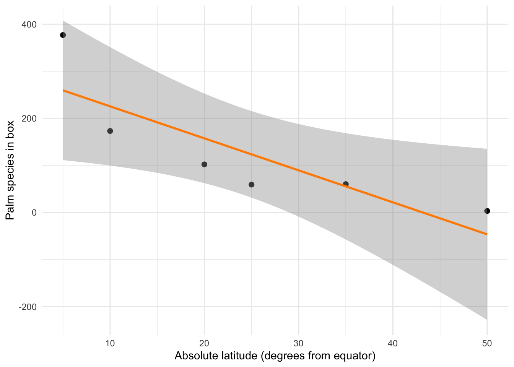

## Run ONCE, then comment out.
install.packages(c("rgbif", "vegan"))14 GBIF: Why are there so many species, and where?
If you haven’t met these before: this chapter treats a count of individuals as a population size (the population-growth chapters) and reuses the log-transformation logic from the metabolic ecology chapter (Chapter 15). You can do this chapter on its own, but a glance back will help.
14.1 Goals
In this chapter, you will,
- Define species richness, evenness, and diversity, and explain why they are three different things.
- Pull real biodiversity data live from a public scientific data repository (GBIF) and measure diversity with it.
- Develop and evaluate a prediction about how diversity changes from the poles to the equator—and confront a real exception.
- See, in real data, why the number of species you “find” depends on how hard people looked, and why that makes raw richness comparisons dangerous.
Time: ~3 h. Most students start the activity in one 80-minute class period and finish the deliverables at home. You need an internet connection.
14.2 Preparatory Steps
- Find out what you need for the deliverables (Section 14.9) before you start, including the parts you will sketch by hand and turn in.
- Watch the video lectures on biodiversity and the latitudinal diversity gradient.
- Open gbif.org in a browser. Search for “Arecaceae” (the palm family) and look at the occurrence map. You are about to query that same database from R.
- Install the
rgbifandveganpackages once (instructions below).
14.3 Background
Walk into a forest in Ohio and you could learn most of the trees in an afternoon: a few oaks, some maples, hickory, beech, ash. Walk into a lowland forest in Colombia or Malaysia and you could spend a career and not finish. Why the enormous difference—and how would you measure it fairly, when one place hands you twenty species and another hands you eight hundred, and nobody counted either one the same way?
14.3.1 A gold standard, and why we usually can’t use it
The cleanest way to compare forests is to measure them identically. That is what the Forest Global Earth Observatory (ForestGEO) does: in each of its large plots, every woody stem at least 1 cm in diameter is mapped, tagged, and identified, then re-measured every few years (Davies et al. 2021). Effort is held constant, so a difference in the numbers is a difference in the forests.
The catch is that there are only a few dozen such plots on Earth, and the data often require formal requests. Most of what humanity knows about where species live is not tidy plot censuses—it is hundreds of years of messy, uneven observations: museum specimens, herbarium sheets, naturalists’ notebooks, and now millions of smartphone photos. The Global Biodiversity Information Facility (GBIF) gathers those records into one searchable repository of more than two billion occurrences (Chamberlain et al. 2026). It is gloriously real, gloriously global, and gloriously biased—and learning to work with it honestly is one of the most valuable data skills in modern ecology.
14.3.2 Three things people mean by “diversity”
- Richness is the number of species present. It ignores how common each one is.
- Evenness describes how equally individuals are spread among species.
- Diversity indices (Shannon, Simpson) combine richness and evenness into a single number.
TipFollow the Logic: why richness alone can fool you
Two forests each have 10 species. In the first, each species has 100 trees. In the second, one species has 991 trees and the other nine have one tree each. Both have richness = 10. But if you walked the second forest blindfolded and grabbed trees at random, you would almost always grab the same species—it behaves like a one-species forest. Richness counts a species seen once exactly as much as a species seen a thousand times; evenness and diversity indices do not. Before you compute anything, decide which of the three you actually care about.
14.3.3 Richness depends on how hard you looked
Here is the uncomfortable part, and it is the heart of this chapter. Richness is not a fixed property you can read off a place like its temperature. The more you look, the more species you find, because rare species only appear once you have sampled enough to stumble onto them. In a ForestGEO plot, “how hard you looked” is fixed by protocol. In GBIF, it is wildly uneven: a well-studied national park in Europe may have a hundred thousand records, while an equally rich forest in central Africa has a few hundred—not because one is poorer, but because more people with more cameras have walked the first one. Comparing raw richness between them measures researcher effort at least as much as it measures biology. Ecologists deal with this using rarefaction: asking how many species you would expect if every place were sampled to the same number of records (Gotelli and Colwell 2001). You will do this below, with real data.
14.3.4 The latitudinal diversity gradient—and an exception
Across most groups of organisms, diversity rises from the poles toward the equator (Hillebrand 2004). Palms are a textbook case: there are essentially no wild palms in Canada and thousands in the equatorial tropics. But the tropics are not uniform. Mainland tropical Africa is strikingly palm-poor compared to equally wet, equally warm forests in tropical Asia and the Americas—a real biogeographic puzzle usually attributed to Africa’s drier, more turbulent climate history (Kissling et al. 2012). A good theory of diversity has to explain both the broad gradient and its exceptions.
14.4 Hypotheses and Predictions
We pursue three questions, each with its own logic.
Q1 (across continents): At roughly the same latitude, do equally tropical forests on different continents have the same palm richness? — an inductive look for a pattern.
Q2 (across latitudes): Does palm richness decline as we move away from the equator? — a deductive test of the latitudinal-gradient hypothesis.
Q3 (the catch): How much of the “richness” we measure is really just sampling effort? — the question that decides whether Q1 and Q2 mean anything. When Africa breaks the pattern in Q1, we will reason abductively: given a surprising observation, what is the best explanation?
ImportantPredict before you compute
Before you run any code, sketch three graphs by hand and photograph them for your deliverables:
- Richness vs. latitude. Absolute latitude on the x-axis, palm species richness on the y-axis. Draw the line the gradient hypothesis predicts.
- Three equatorial countries. Bars for Colombia, Malaysia, and Cameroon (all near the equator). Draw how tall you expect each bar to be.
- Richness vs. effort. Number of records on the x-axis, species found on the y-axis. Draw the shape you expect, and mark whether it ever flattens.
Keep these. The chapter’s payoff is comparing them to what the data do—and explaining the mismatches.
14.5 Get R ready for work
library(rgbif) # live access to the GBIF biodiversity repository
library(vegan) # diversity, rarefaction
library(tidyverse) # wrangling and ggplot2
library(broom) # tidy model outputFirst we look up the taxonomic key GBIF uses for the palm family. Every query below filters on this key, so we are always asking specifically about palms.
palm_key <- name_backbone(name = "Arecaceae")$usageKey
palm_key[1] "7681"The #| cache: true on the data chunks means the book stores GBIF’s answers so it can rebuild without re-querying every time. GBIF grows constantly, so if you re-run these with the cache cleared, your numbers will differ slightly from the printed ones. That is not an error—it is what a living database looks like.
14.6 Q1 — Same latitude, different continents
We ask GBIF how many palm species have been recorded in each of several countries. Three of them—Colombia, Malaysia, Cameroon—sit at almost the same distance from the equator but on three different continents. We add Madagascar (an African island famous for endemic palms) and two temperate countries for contrast.
The modern occ_count() returns one row per species when we facet on speciesKey, so the number of rows is the species richness.
countries <- tribble(
~country, ~iso, ~continent, ~abs_latitude,
"Colombia", "CO", "S. America", 4.0,
"Malaysia", "MY", "Asia", 4.0,
"Cameroon", "CM", "Africa", 6.0,
"Madagascar", "MG", "Africa (island)", 19.0,
"United States","US","N. America", 38.0,
"United Kingdom","GB","Europe", 54.0
)
palm_richness <- function(iso) {
occ_count(facet = "speciesKey", facetLimit = 99999,
taxonKey = palm_key, country = iso) |> nrow()
}
palm_records <- function(iso) {
occ_count(taxonKey = palm_key, country = iso)
}
countries <- countries |>
mutate(richness = map_int(iso, palm_richness),
records = map_dbl(iso, palm_records))
countries |> select(country, continent, abs_latitude, richness, records)# A tibble: 6 × 5
country continent abs_latitude richness records
<chr> <chr> <dbl> <int> <dbl>
1 Colombia S. America 4 374 204700
2 Malaysia Asia 4 508 14311
3 Cameroon Africa 6 55 2054
4 Madagascar Africa (island) 19 238 12048
5 United States N. America 38 625 72975
6 United Kingdom Europe 54 85 711
NoteWalk me through this code
name_backbone() translates the name “Arecaceae” into the numeric key GBIF stores it under. occ_count(facet = "speciesKey", ...) asks GBIF to break its count down by species and hand back one row per species; piping that to nrow() counts the species = richness. The second helper, with no facet, returns the plain total number of records (our measure of effort). map_int() and map_dbl() just run those helpers once per country and collect the answers into new columns. Everything is one live request per country—no files, no downloads.
countries |>
mutate(country = fct_reorder(country, richness)) |>
ggplot(aes(x = country, y = richness, fill = continent)) +
geom_col() +
coord_flip() +
labs(x = NULL, y = "Recorded palm species (GBIF)", fill = "Region") +
theme_minimal()
Two things should stand out. The temperate countries have almost no wild palms, as the gradient predicts. And among the three equatorial countries, the African mainland (Cameroon) is far poorer than tropical Asia or South America—even though all three are wet, warm, and near the equator. That is the African anomaly, live.
TipFollow the Logic: before you trust that African bar
Cameroon’s bar is short. Two very different stories could produce it: (1) central Africa really does have fewer palm species, or (2) far fewer botanists have uploaded records from Cameroon than from Malaysia or Colombia, so we simply haven’t found its palms yet. Look at the records column you just printed. If Cameroon also has far fewer records, you cannot yet tell biology from effort. This is exactly why the next two sections exist.
14.7 Q3 — How much is effort? Rarefaction
Plot richness against effort directly. If richer countries are mostly the better-sampled ones, the points will climb together.
ggplot(countries, aes(x = records, y = richness, label = country)) +
geom_point(size = 2) +
geom_text(vjust = -0.8, size = 3) +
scale_x_log10() +
labs(x = "Number of GBIF records (log scale)", y = "Recorded palm species") +
theme_minimal()
To compare fairly, we rarefy: download a sample of actual occurrence records for two equatorial countries, count records per species, and ask how many species each would show if thinned to the same number of records.
get_species_counts <- function(iso, n = 3000) {
occ_search(taxonKey = palm_key, country = iso,
hasCoordinate = TRUE, limit = n)$data |>
filter(!is.na(species)) |>
count(species, name = "n")
}
co <- get_species_counts("CO") # Colombia
cm <- get_species_counts("CM") # Cameroon## Build named count vectors and rarefy both to a common sample size.
co_vec <- setNames(co$n, co$species)
cm_vec <- setNames(cm$n, cm$species)
common_n <- min(sum(co_vec), sum(cm_vec))
tibble(
country = c("Colombia", "Cameroon"),
raw_species = c(length(co_vec), length(cm_vec)),
rarefied_species = c(rarefy(co_vec, sample = common_n),
rarefy(cm_vec, sample = common_n))
)# A tibble: 2 × 3
country raw_species rarefied_species
<chr> <int> <dbl>
1 Colombia 98 79.8
2 Cameroon 46 46
TipFollow the Logic: what rarefaction does and does not fix
Rarefaction puts two samples on equal footing for number of records, so a difference that survives rarefaction is unlikely to be pure effort. But it cannot fix everything: if collectors in one country ignored common roadside palms and chased rare ones, the sample is biased no matter how many records it has. Rarefaction equalizes quantity, not quality. State this limit in your write-up.
14.8 Q2 — The gradient, done right
Comparing whole countries confounds latitude with area: Brazil is enormous and the UK is small, and bigger areas hold more species regardless of latitude. To isolate latitude, query equal-sized boxes (10° × 10°) marching down the Americas, so area is held roughly constant and only latitude changes.
boxes <- tribble(
~lon, ~lat,
-110, 50, # W Canada / N US
-100, 35, # S US
-100, 20, # Mexico
-75, 5, # Colombia
-70, -10, # W Brazil / Peru
-60, -25 # S Brazil / Paraguay
)
box_wkt <- function(lon, lat, half = 5) {
sprintf("POLYGON((%f %f,%f %f,%f %f,%f %f,%f %f))",
lon - half, lat - half, lon + half, lat - half,
lon + half, lat + half, lon - half, lat + half,
lon - half, lat - half)
}
box_richness <- function(lon, lat) {
occ_count(facet = "speciesKey", facetLimit = 99999,
taxonKey = palm_key, geometry = box_wkt(lon, lat)) |> nrow()
}
boxes <- boxes |>
mutate(abs_latitude = abs(lat),
richness = map2_int(lon, lat, box_richness))
boxes# A tibble: 6 × 4
lon lat abs_latitude richness
<dbl> <dbl> <dbl> <int>
1 -110 50 50 3
2 -100 35 35 60
3 -100 20 20 102
4 -75 5 5 377
5 -70 -10 10 173
6 -60 -25 25 59ggplot(boxes, aes(x = abs_latitude, y = richness)) +
geom_point(size = 2) +
geom_smooth(method = "lm", se = TRUE, colour = "darkorange") +
labs(x = "Absolute latitude (degrees from equator)",
y = "Palm species in box") +
theme_minimal()
fit <- lm(richness ~ abs_latitude, data = boxes)
tidy(fit) # slope: species lost per degree of latitude# A tibble: 2 × 5
term estimate std.error statistic p.value
<chr> <dbl> <dbl> <dbl> <dbl>
1 (Intercept) 293. 62.4 4.70 0.00929
2 abs_latitude -6.80 2.19 -3.11 0.0360 glance(fit) # r.squared: how much of the variation latitude explains# A tibble: 1 × 12
r.squared adj.r.squared sigma statistic p.value df logLik AIC BIC
<dbl> <dbl> <dbl> <dbl> <dbl> <dbl> <dbl> <dbl> <dbl>
1 0.707 0.634 81.0 9.66 0.0360 1 -33.7 73.3 72.7
# ℹ 3 more variables: deviance <dbl>, df.residual <int>, nobs <int>
NoteWalk me through the box query and the model
box_wkt() writes the corners of a square as a text “polygon” in the format GBIF expects (longitude latitude pairs, closed back to the start). box_richness() hands that polygon to occ_count() and counts species the same way we did per country. Because every box is the same size, differences in richness can’t be blamed on area. lm() fits a straight line; tidy(fit) reports its slope (how many palm species disappear per degree you move from the equator) and glance() reports r.squared, the share of box-to-box variation latitude accounts for.
The slope should be negative: palm richness falls as you leave the equator, exactly as the latitudinal-gradient hypothesis predicts—and now with area controlled, so you can believe it.
14.9 Deliverables
Assemble the following into a single document and submit it online.
Your three hand-drawn predictions (richness vs. latitude; the three equatorial countries; richness vs. effort), photographed before you ran any code.
In your own words (2–3 sentences each): a. the difference between richness, evenness, and diversity; b. why GBIF richness reflects sampling effort, and what rarefaction does about it; c. why comparing whole countries confounds latitude with area.
Reproduce and include the country-richness figure (Figure 14.1) and the gradient figure (Figure 14.3). For each, write one sentence comparing the real figure to your hand-drawn prediction, and explain any mismatch.
The African anomaly. Using the
recordscolumn and your rarefaction result, argue whether Cameroon’s low palm richness is mostly biology or mostly under-sampling. State one additional piece of evidence that would strengthen your case.Oaks vs. palms. Re-run the country analysis for the oak family,
name_backbone(name = "Fagaceae")$usageKey, across the same countries. Do oaks show the same latitudinal pattern as palms? In two or three sentences, explain what it means that “the latitudinal gradient” can point different directions for different groups.Audit the machine. Below is a paragraph an AI chatbot produced when asked to summarize this chapter. It is fluent and mostly right, but contains at least one substantive error. Quote the offending sentence(s) and correct them:
“Species richness is the most complete measure of biodiversity because it captures both how many species live somewhere and how evenly abundant they are. Because GBIF aggregates records from around the world, the number of species it reports for a country is an accurate, effort-independent count of the species that live there. Diversity always increases smoothly toward the equator, so any tropical country will be more diverse than any temperate one.”
Catching where a confident-sounding summary is wrong—about effort, about what richness measures, about exceptions to the gradient—is the whole point of learning the mechanisms instead of trusting the output.
- Cite your data. GBIF results change daily, so reproducibility requires a citable snapshot. Read the one-paragraph note below and state, in one sentence, why a real publication should use
occ_download()rather than the liveocc_count()calls we used for teaching.
Citing GBIF properly. The quick occ_count()/occ_search() calls here are perfect for learning but are not citable snapshots. For research, rgbif’s occ_download() workflow asks GBIF to assemble your exact records and issues a DOI that pins the data and credits every contributing dataset. Always cite that DOI plus GBIF itself (GBIF.org 2026) and the rgbif package (Chamberlain et al. 2026).
14.10 References
This chapter cites Davies et al. (2021), Hillebrand (2004), Gotelli and Colwell (2001), Kissling et al. (2012), the GBIF repository (GBIF.org 2026), and the rgbif package (Chamberlain et al. 2026). Full references appear in the book’s reference list once these keys are in your .bib.